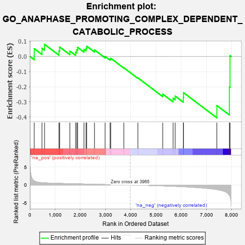
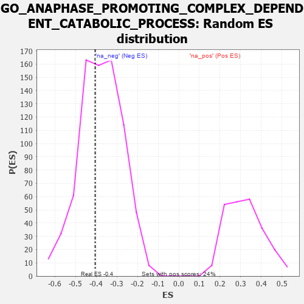

| | | Dataset | 7d |
| Phenotype | NoPhenotypeAvailable |
| Upregulated in class | na_neg |
| GeneSet | GO_ANAPHASE_PROMOTING_COMPLEX_DEPENDENT_CATABOLIC_PROCESS |
| Enrichment Score (ES) | -0.40520543 |
| Normalized Enrichment Score (NES) | -1.0763131 |
| Nominal p-value | 0.39290407 |
| FDR q-value | 0.7829426 |
| FWER p-Value | 1.0 |
Table: GSEA Results Summary

Fig 1: Enrichment plot: GO_ANAPHASE_PROMOTING_COMPLEX_DEPENDENT_CATABOLIC_PROCESS
Profile of the Running ES Score & Positions of GeneSet Members on the Rank Ordered List
| PROBE | GENE SYMBOL | GENE_TITLE | RANK IN GENE LIST | RANK METRIC SCORE | RUNNING ES | CORE ENRICHMENT | | 1 | BUB3 | | | 172 | 1.143 | 0.0514 | No |
| 2 | CDC20 | | | 480 | 0.644 | 0.0538 | No |
| 3 | CCNB1 | | | 581 | 0.601 | 0.0796 | No |
| 4 | PSMD7 | | | 1152 | 0.454 | 0.0369 | No |
| 5 | PSMD2 | | | 1181 | 0.450 | 0.0621 | No |
| 6 | CDC27 | | | 1585 | 0.377 | 0.0354 | No |
| 7 | PSMD4 | | | 1811 | 0.335 | 0.0285 | No |
| 8 | PSMD6 | | | 1858 | 0.326 | 0.0435 | No |
| 9 | CUL3 | | | 1893 | 0.321 | 0.0597 | No |
| 10 | PSME4 | | | 2143 | 0.285 | 0.0466 | No |
| 11 | CDK2 | | | 2226 | 0.272 | 0.0537 | No |
| 12 | PSMF1 | | | 2251 | 0.268 | 0.0677 | No |
| 13 | PSMD5 | | | 2560 | 0.218 | 0.0429 | No |
| 14 | UBE2S | | | 2980 | 0.153 | -0.0001 | No |
| 15 | PSMD9 | | | 3179 | 0.125 | -0.0170 | No |
| 16 | FZR1 | | | 3205 | 0.122 | -0.0124 | No |
| 17 | CDC16 | | | 3724 | 0.038 | -0.0752 | No |
| 18 | PSME3 | | | 4280 | -0.056 | -0.1414 | No |
| 19 | CDK1 | | | 5264 | -0.262 | -0.2484 | No |
| 20 | PSMD1 | | | 5674 | -0.367 | -0.2764 | No |
| 21 | CDC23 | | | 5756 | -0.394 | -0.2615 | No |
| 22 | PLK1 | | | 6082 | -0.500 | -0.2704 | No |
| 23 | UBB | | | 6090 | -0.503 | -0.2392 | No |
| 24 | UBC | | | 7410 | -1.274 | -0.3239 | Yes |
| 25 | PSMD3 | | | 7907 | -2.887 | -0.2019 | Yes |
| 26 | PSMD8 | | | 7931 | -3.286 | 0.0050 | Yes |
Table: GSEA details [plain text format]

Fig 2: GO_ANAPHASE_PROMOTING_COMPLEX_DEPENDENT_CATABOLIC_PROCESS: Random ES distribution
Gene set null distribution of ES for GO_ANAPHASE_PROMOTING_COMPLEX_DEPENDENT_CATABOLIC_PROCESS